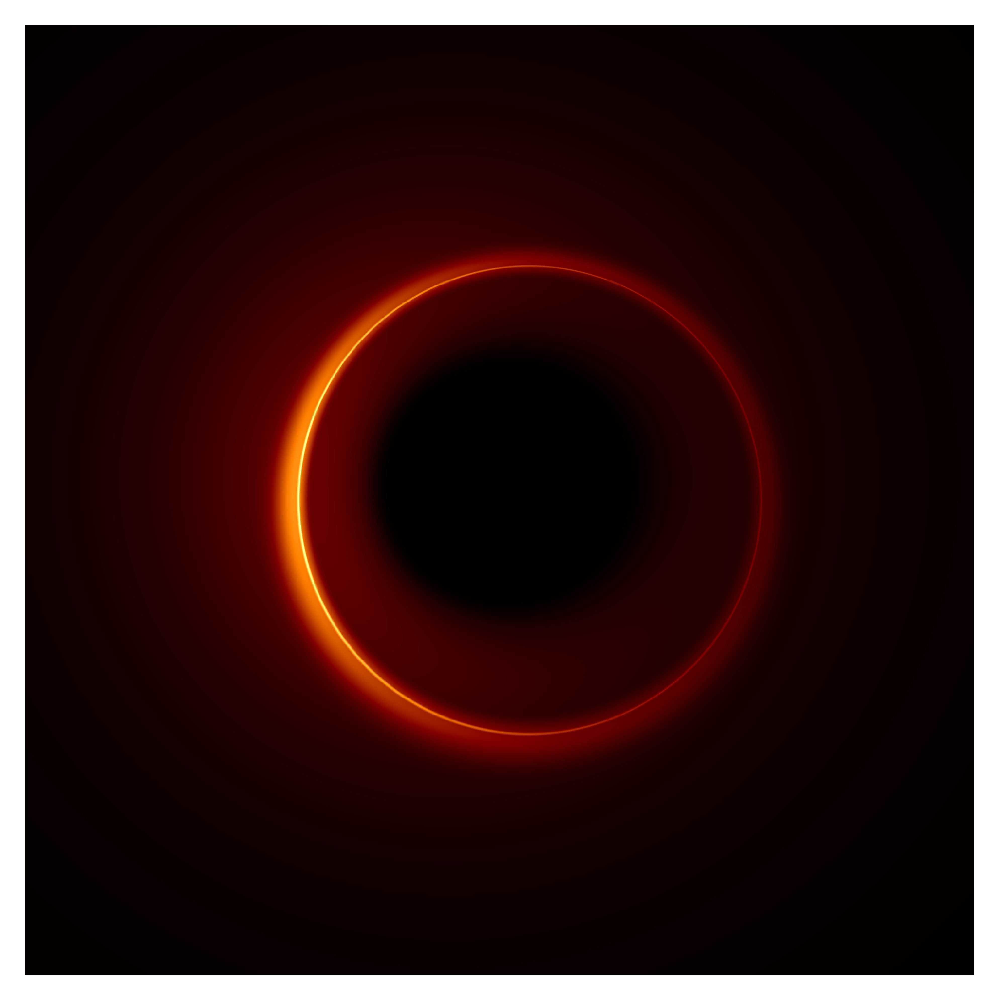

About
I am a fourth-year undergraduate at Princeton University in the Department of Physics. My research interests broadly lie in theoretical astrophysics. My current research projects span three distinct areas: black hole photon rings, gravitational wave astronomy, and relativistic hydrodynamics.

Photon Rings
The event horizon of a black hole is a boundary which delineates its interior and its exterior. Once in the interior, nothing, including light, can escape due to the extreme curvature of spacetime. Despite its strong gravity, not everything in the vicinity of a black hole is destined to immediately fall in. Even those things that do fall in can take a sufficiently long time to do so to allow rich dynamics to unfold in the intermediate time. Such dynamics can be imprinted in black hole images, which consequently contain information about the nature of gravity around the black hole and the complex astrophysical processes which drive the behavior of the surrounding emission. Images of black holes are therefore a powerful tool in furthering our understanding of the astrophysics of the emission surrounding a black hole, and the nature of gravity in the strong-field regime, facilitating potential precision tests of Einstein's theory of General Relativity.
The emission around a black hole can take on different types of geometries, e.g., disk-like, spherical, toroidal, etc. If the emission is optically thin, then, in theory, an "image" of a black hole taken over infinite time would infact consist of infinitely many images superimposed on each other. Each image is equivalent in the sense that they are all images of the surrounding emission, but different since each is produced by photons with increasingly lensed trajectories: each successive image is rotated, delayed, and exponentially demagnified with respect to the last. The figure below shows an example of the first three of such images (simulated using AART).
This multi-layered, nested structure in black hole images arises due to lensing effects in the spacetime around a black hole. Photons emitted by the surrounding accretion will execute some number of orbits around the black hole before either falling in or escaping to infinity. A distant observer receives photons which: escaped directly after emission, crossing the equatorial plane \(n=0\) times, wrapped around the black hole once, crossing the equatorial plane \(n=1\) times before escaping, and so on. This leads to the nested structure in black hole images. As \(n\) increases, the corresponding photons an observer receives are increasingly lensed. Consequently, the \(n=0\) image, produced by photons which undergo the least gravitational lensing, is the most astrophyics dependent, while the higher order images are increasingly decoupled from the astrophysics and more strongly determined by the underlying theory of gravity. Indeed, as the photons are more strongly lensed (i.e., as \(n\) increases), the region in the image where the photons arrive (and create an intensity) exponentially thins, converging to a infinitely thin closed curve as \(n\to\infty,\) whose shape is completely determined by the underlying spacetime geometry. This exponential thinning with increasing \(n\) is responsible for the ring-like structure seen in the panel above. The "full" image is the sum of these images, shown below. In practice, photons will not orbit the black hole an arbitrary number of times before escaping to infinity since the surrounding emission has some finite depth, meaning that, eventually, the photon will be absorbed.
In order to "take" an image of an astrophysical black hole, one must first observe its interferometric signature, and, from that, reconstruct an image. Such observations are experimentally challenging, and, as yet, photon rings remain an unobserved prediction of general relativity. In measuring the interferometric signal of a black hole, one samples it as a function of the separation between the array of telescopes combined in the experiment. To probe higher order photon rings, one requires a larger telescope separation. In particular, observations of the first photn ring will require separations on the order of several earth diameters, meaning that proposed observational campaigns targerting the first photon ring are space-based.
Thus far, my research has aimed to assess the feasibility of measuring the (interferometric) shape of the first photon, and what constraints on properties of the black hole one might be able to infer from such measurements. In particular, in this paper my collaborators and I studied the effect of instrument noise and astrophysical fluctiations on measurements of the shape of the first photon ring using phenomenological models. The extent to which the methods employed in that initial study can be used to infer bounds on properties of the black hole (spin and inclination) will be studied in an upcoming paper.
Extreme-mass-ratio inspirals
The Laser Interferometer Space Antenna (LISA) will detect extreme mass-ratio inspirals (EMRIs): binary systems where a small compact object (SCO) orbits a supermassive black hole (MBH). Due to its compactness, the SCO locally perturbs the MBH's background geometry, which, in turn, perturbs the SCO's motion. This gravitational self-interaction causes the SCO to radiate energy and slowly inspiral into the MBH. Due to their significant mass disparity, these systems offer unique opportunities to probe black hole properties and test general relativity in the "strong-field" regime.
Prior to the merger phase, the orbital time scales in an EMRI system are much shorter than radiation-reaction time scales. Locally, the motion of the SCO is therefore well-appoximated by geodesic motion. One can then reconstruct the full pre-merger trajectory by piecing together a continuous sequence of geodesic wordlines, in between each computing corrections to the constants of motion (i.e., the energy, axial angular momentum and Carter constant) to take into account the radiative fluxes. The perturbations of the MBH's background geometry by the SCO cause ripples in the fabric of spacetime which propagate away from the EMRI system to infinity, where observers can (remarkably) observe their waveform. The animation below shows an example of a (very short) snapshot of an early EMRI trajectory and the corresponding gravitational waveform.
The animation above was produced using the iChimera, code written by my collaborators and I which computes EMRI waveforms based on the "Chimera": a kludge-scheme proposed by Sopuerta and Yunes over a decade ago which approximates the gravitational self-force locally by combining ingredients from black hole perturbation theory, multipolar post-Minkowskian formalism, and post-Newtonian theory. Such a kludge scheme is interesting because of its local nature, which might allow one to study local phenomena (e.g., resonances) more easily than models which employ adiabatic averaging. A systematic comparison of these Chimera waveforms to augmented analytic kludge (AAK) and Teukolsky-based ones will be carried out in an upcoming paper.
CV
Extreme mass-ratio inspirals. Extreme mass-ratio inspirals. Extreme mass-ratio inspirals. Extreme mass-ratio inspirals. Extreme mass-ratio inspirals. Extreme mass-ratio inspirals. Extreme mass-ratio inspirals. Extreme mass-ratio inspirals.
Contact
lkeeble [at] princeton [dot] edu